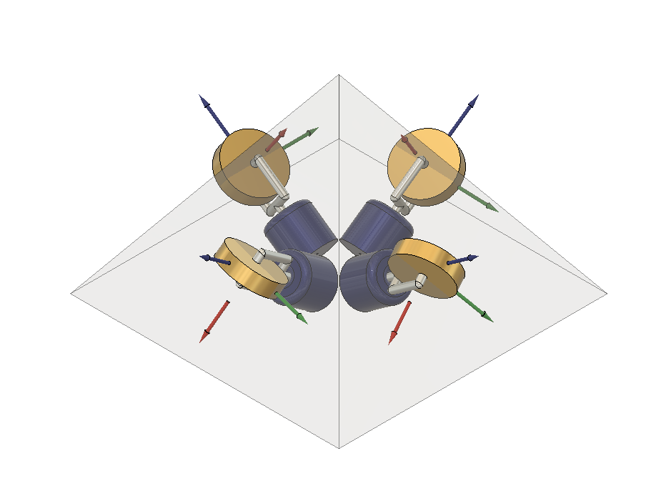

A Hybrid Control Moment Gyroscope (HCMG) combines the high-torque slewing capability of a Control Moment Gyroscope (CMG) with the precise pointing capability of a reaction wheel, making it well suited for CubeSats with limited space and actuator resources. However, external disturbances in low Earth orbit continuously introduce angular momentum into the spacecraft, which can accumulate and eventually saturate the HCMG, limiting its ability to control the spacecraft. This research investigates the use of magnetorquers (MTQs) to actively dump accumulated momentum while maintaining effective attitude control without interfering with the HCMG steering algorithm.
